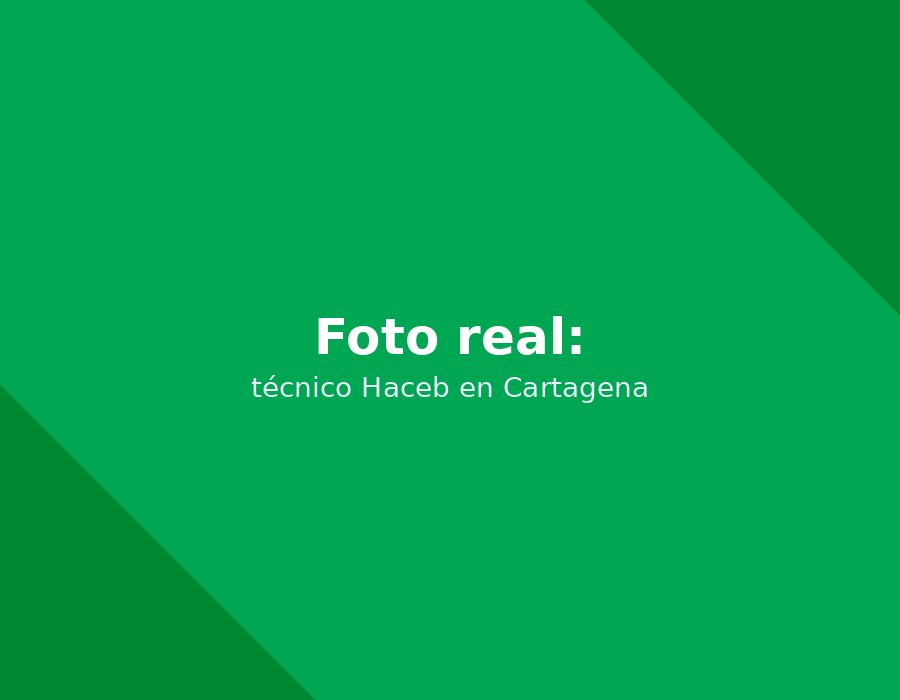
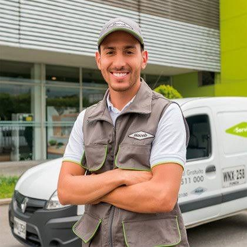

Servicio técnico Haceb en Cartagena: Reparamos y mantenemos neveras Haceb a domicilio en Cartagena, con experiencia en su sistema de control de temperatura y sistema No Frost.

Llame directamente o escriba por WhatsApp al mismo número para agendar su servicio técnico Haceb en Cartagena. Respondemos en minutos.
☏ Escribir por WhatsApp
Contamos con técnicos certificados en la tecnología específica de Haceb (sistemas No Frost y control de temperatura). Somos la opción confiable de servicio técnico Haceb en Cartagena para neveras Haceb, con foco en termostato, control de temperatura y sistema No Frost.
Así de fácil es agendar su servicio técnico Haceb a domicilio.
Cuéntenos por WhatsApp o al +57 321 799 6144 la marca y la falla de su nevera Haceb.
Confirmamos fecha y hora, con el tiempo estimado de llegada según su zona en Cartagena.
El técnico revisa el equipo en su domicilio y le explica la falla y el costo antes de reparar.
Reparamos con repuestos originales Haceb y entregamos garantía escrita.
Un resumen rápido. Vea la guía completa con causas y diagnóstico detallado.
Falla común: Enfriamiento inconsistente o la nevera congela todo.
Síntomas: El sensor de temperatura o el termostato no regulan correctamente. Es crítico en Cartagena, donde las temperaturas ambientales son altas.
Falla común: Nevera que no enfría abajo, pero el congelador sí funciona.
Síntomas: El ducto de aire entre el congelador y la nevera está bloqueado por hielo, por un fallo en el ciclo de descongelamiento automático (timer, resistencia o bimetálico).
Falla común: Ruidos fuertes, clics o ausencia total de enfriamiento.
Síntomas: El compresor o el relé de arranque pueden estar dañados. El sobrecalentamiento en ambientes tropicales como Cartagena es una causa frecuente.
Guía completa de diagnóstico: síntomas, causas y solución para cada falla frecuente de su nevera Haceb.
Cuidados específicos para la tecnología sistemas No Frost y control de temperatura y el clima de Cartagena.
Instalación profesional con toma de agua, nivelación y prueba de funcionamiento.
Compresores, tarjetas electrónicas y empaques 100% genuinos, con garantía escrita.
Si su nevera o nevecón Haceb dejó de enfriar, hace ruidos extraños o presenta hielo donde no debería, no está solo: es una de las consultas más frecuentes que recibimos en Cartagena. El clima costero —calor constante, humedad alta y brisa salina— somete a los electrodomésticos a un desgaste mayor que en ciudades del interior del país, y las neveras Haceb con tecnología sistemas No Frost y control de temperatura no son la excepción. Esta guía resume lo que debe saber antes de agendar un servicio técnico Haceb en Cartagena.
La tecnología sistemas No Frost y control de temperatura de Haceb está diseñada para ser más eficiente y silenciosa que los sistemas convencionales, pero también es más sensible a instalaciones incorrectas, mantenimiento nulo o fluctuaciones de voltaje comunes en la red eléctrica local. Por eso, neveras Haceb, con foco en termostato, control de temperatura y sistema No Frost. Un diagnóstico hecho por alguien sin experiencia específica en esta tecnología puede terminar cambiando piezas que no eran el problema real, y encareciendo la reparación innecesariamente.
Entre los motivos más comunes por los que nuestros clientes en Cartagena solicitan un técnico Haceb están: Problemas con el termostato o control de temperatura (enfriamiento inconsistente o la nevera congela todo); Bloqueo de aire en modelos No Frost (nevera que no enfría abajo, pero el congelador sí funciona); Compresor ruidoso o que no enciende (ruidos fuertes, clics o ausencia total de enfriamiento). Si identifica alguno de estos síntomas, lo recomendable es desconectar el equipo solo si hay riesgo eléctrico visible (cables pelados, olor a quemado) y agendar una visita cuanto antes: muchas fallas menores se convierten en daños mayores —y reparaciones más costosas— si se dejan pasar varias semanas.
Un buen servicio técnico Haceb en Cartagena debe ofrecerle tres cosas como mínimo: diagnóstico honesto antes de cobrar por repuestos, piezas 100% originales con garantía escrita, y técnicos que conozcan la tecnología específica de su equipo y no solo refrigeración genérica. Es exactamente lo que ofrecemos: revise las secciones de fallas comunes, mantenimiento preventivo e instalación de esta misma página para más detalle sobre cada etapa del servicio.
"El técnico calibró el termostato de mi nevera en Bocagrande, quedó funcionando perfecto."
— Katherine B. (Bocagrande)"Mantenimiento preventivo crucial por la humedad de Cartagena, muy puntuales."
— Wilson G. (Manga)"Repararon mi nevera con garantía escrita. Recomendados en Crespo."
— Sandra I. (Crespo)Generalmente es un termostato descalibrado o un sensor de temperatura dañado. Lo revisamos y calibramos o reemplazamos en la misma visita.
Sí, cubrimos Turbaco y las principales zonas de Cartagena; consulte disponibilidad para su sector.
Cubrimos Bocagrande, Manga, El Laguito, Castillogrande, Crespo, Centro Histórico, Pie de la Popa y Turbaco. Si su zona no aparece, escríbanos para confirmar disponibilidad.
Ver todas las preguntas sobre Haceb → · preguntas generales del sitio →
Reparamos neveras y nevecones de todas las marcas en Cartagena.
Servicio a domicilio en toda la ciudad.
Cuéntanos la falla de tu nevera Haceb. Te confirmamos por WhatsApp en minutos.